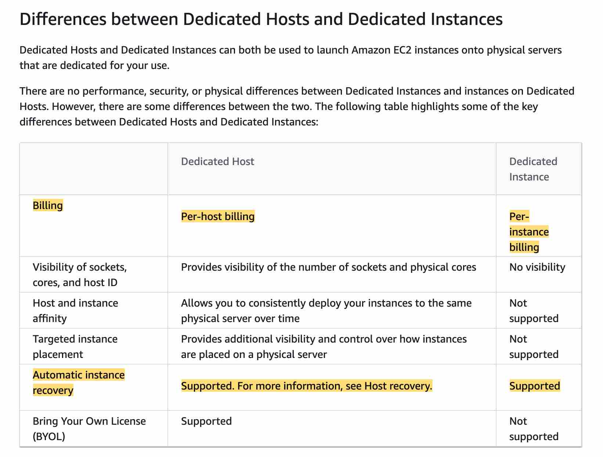
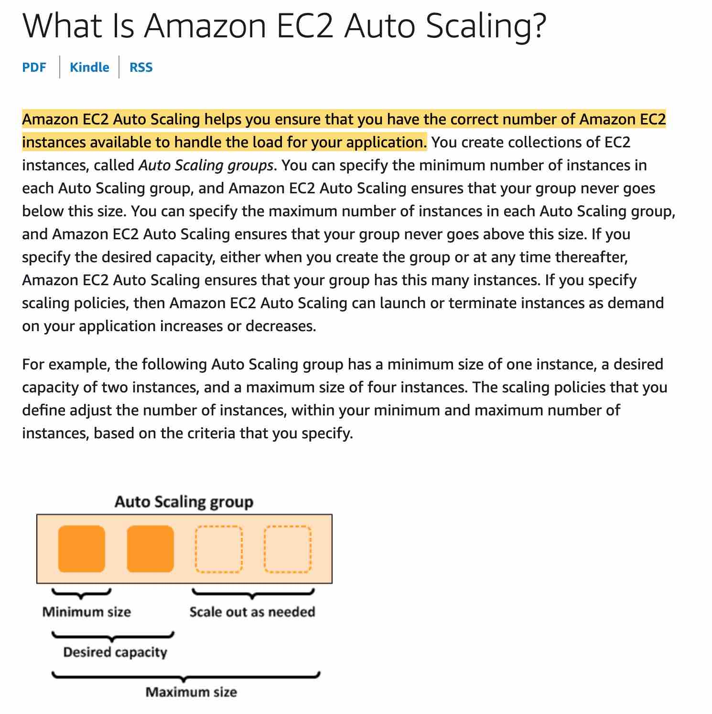
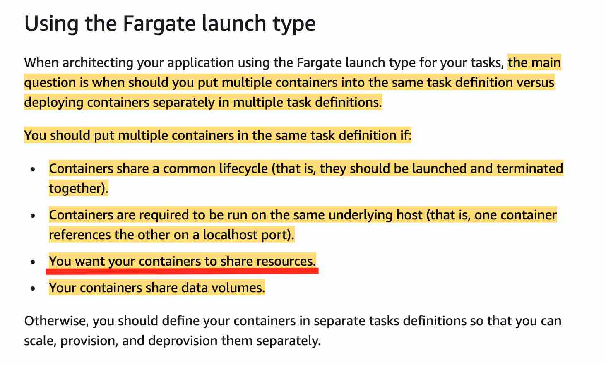
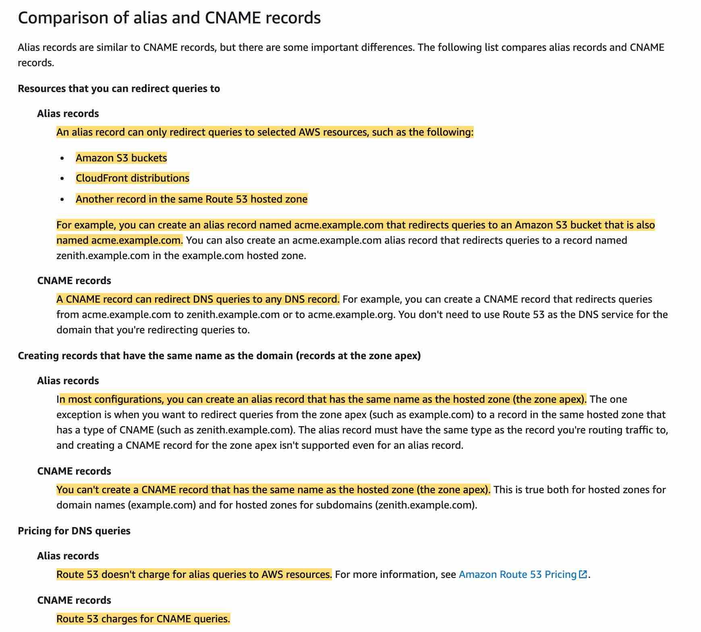
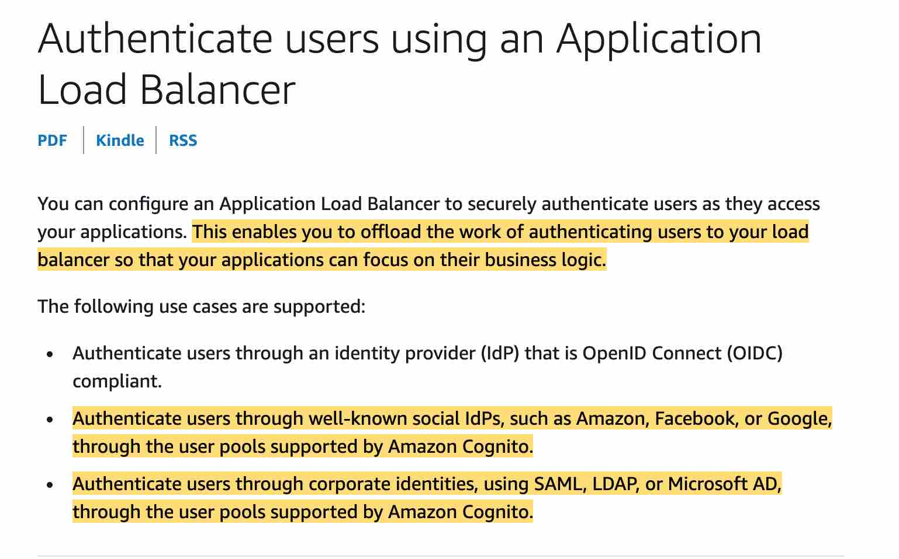
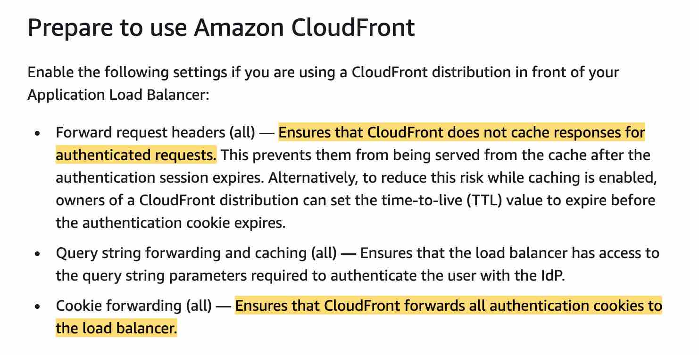
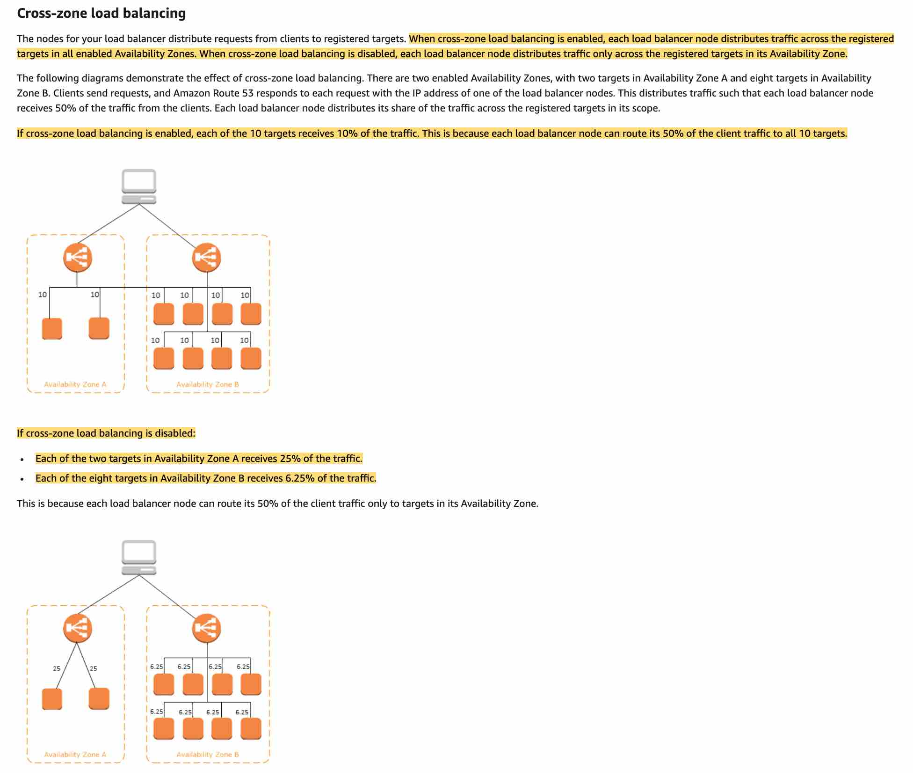
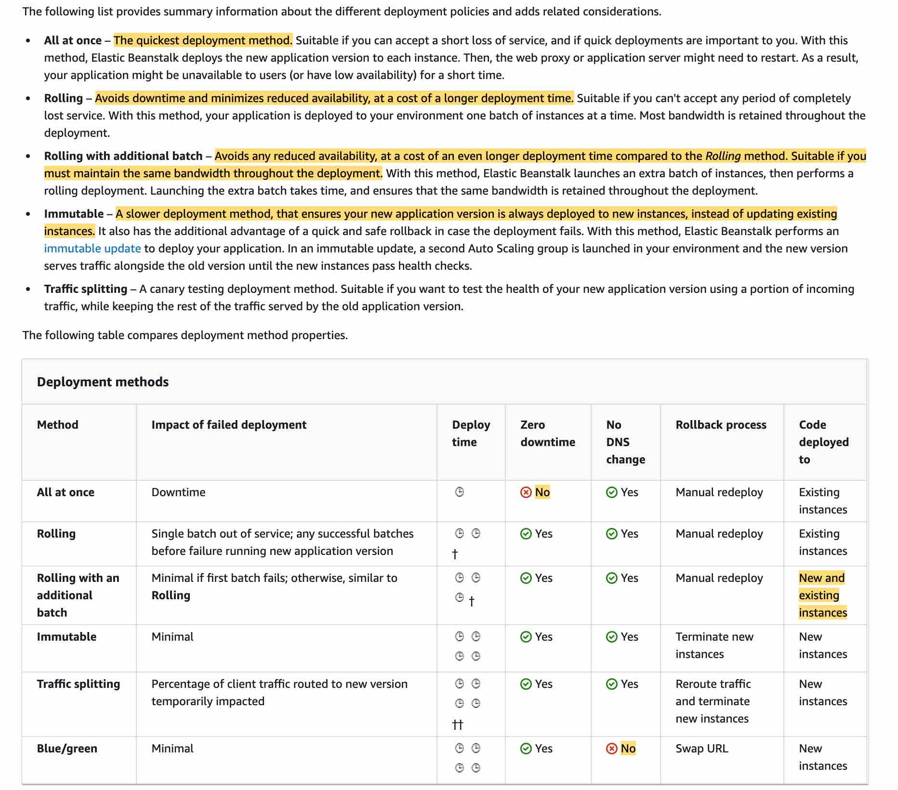

AWS requires approximately 5 weeks of usage data to generate budget forecasts - AWS requires approximately 5 weeks of usage data to generate budget forecasts. If you set a budget to alert based on a forecasted amount, this budget alert isn't triggered until you have enough historical usage information.
A load balancer accepts incoming traffic from clients and routes requests to its registered targets (such as EC2 instances) in one or more Availability Zones. The load balancer also monitors the health of its registered targets and ensures that it routes traffic only to healthy targets. When the load balancer detects an unhealthy target, it stops routing traffic to that target. It then resumes routing traffic to that target when it detects that the target is healthy again.
Separate public traffic from private traffic - The nodes of an internet-facing load balancer have public IP addresses. Load balancers route requests to your targets using private IP addresses. Therefore, your targets do not need public IP addresses to receive requests from users over the internet.
Build a highly available system - Elastic Load Balancing provides fault tolerance for your applications by automatically balancing traffic across targets – Amazon EC2 instances, containers, IP addresses, and Lambda functions – in multiple Availability Zones while ensuring only healthy targets receive traffic.
The Load Balancer communicates with the underlying EC2 instances using their public IPs - This is an incorrect statement. The Load Balancer communicates with the underlying EC2 instances using their private IPs.
Improve vertical scalability of the system - This is an incorrect statement. Elastic Load Balancers can connect with Auto Scale groups to provide horizontal scaling.
Deploy EC2 instances across multiple AWS Regions - A Load Balancer can target EC2 instances only within an AWS Region.
For Amazon CloudFront, you use key pairs to create signed URLs for private content, such as when you want to distribute restricted content that someone paid for.
CloudFront Key Pairs - IAM users can't create CloudFront key pairs. You must log in using root credentials to create key pairs.
To create signed URLs or signed cookies, you need a signer. A signer is either a trusted key group that you create in CloudFront, or an AWS account that contains a CloudFront key pair. AWS recommends that you use trusted key groups with signed URLs and signed cookies instead of using CloudFront key pairs.
EC2 Instance Key Pairs - You use key pairs to access Amazon EC2 instances, such as when you use SSH to log in to a Linux instance. These key pairs can be created from the IAM user login and do not need root user access.
IAM User Access Keys - Access keys consist of two parts: an access key ID and a secret access key. You use access keys to sign programmatic requests that you make to AWS if you use AWS CLI commands (using the SDKs) or using AWS API operations. IAM users can create their own Access Keys, does not need root access.
IAM User passwords - Every IAM user has access to his own credentials and can reset the password whenever they need to.
Use the --region parameter: If the region parameter is not set, then the CLI command is executed against the default AWS region.us-east-1
You must ensure that your load balancer can communicate with registered targets on both the listener port and the health check port. Whenever you add a listener to your load balancer or update the health check port for a target group used by the load balancer to route requests, you must verify that the security groups associated with the load balancer allow traffic on the new port in both directions.
With CloudTrail, you can log, continuously monitor, and retain account activity related to actions across your AWS infrastructure. You can use AWS CloudTrail to answer questions such as - “Who made an API call to modify this resource?”. CloudTrail provides event history of your AWS account activity thereby enabling governance, compliance, operational auditing, and risk auditing of your AWS account. You cannot use CloudTrail to maintain a history of resource configuration changes.
Exam Alert:
You may see scenario-based questions asking you to select one of CloudWatch vs CloudTrail vs Config. Just remember this thumb rule -
Think resource performance monitoring, events, and alerts; think CloudWatch.
Think account-specific activity and audit; think CloudTrail.
Think resource-specific history, audit, and compliance; think Config.
CloudWatch Metrics - CloudWatch provides you with data and actionable insights to monitor your applications, respond to system-wide performance changes, optimize resource utilization, and get a unified view of operational health.
Amazon CloudWatch allows you to monitor AWS cloud resources and the applications you run on AWS. Metrics are provided automatically for a number of AWS products and services. CloudWatch cannot help determine the source for KMS API calls.
X-Ray - AWS X-Ray helps developers analyze and debug distributed applications. With X-Ray, you can understand how your application and its underlying services are performing to identify and troubleshoot the root cause of performance issues and errors. X-Ray cannot help determine the source for KMS API calls.
Config - AWS Config is a service that enables you to assess, audit, and evaluate the configurations of your AWS resources. With Config, you can review changes in configurations and relationships between AWS resources, dive into detailed resource configuration histories, and determine your overall compliance against the configurations specified in your internal guidelines. You can use Config to answer questions such as - “What did my AWS resource look like at xyz point in time?”. Config cannot help determine the source for KMS API calls.
CodeCommit - AWS CodeCommit is a fully-managed source control service that hosts secure Git-based repositories. You can use the Elastic Beanstalk Command Line Interface (CLI) to deploy your application directly from an AWS CodeCommit repository. CodeCommit cannot be used to provision your resources for the Elastic Beanstalk application.
CodeDeploy - AWS CodeDeploy is a fully managed deployment service that automates software deployments to a variety of compute services such as Amazon EC2, AWS Fargate, AWS Lambda, and your on-premises servers. AWS CodeDeploy makes it easier for you to rapidly release new features, helps you avoid downtime during application deployment, and handles the complexity of updating your applications. CodeDeploy cannot be used to provision your resources for the Elastic Beanstalk application.
Systems Manager - Using AWS Systems Manager, you can group resources, like Amazon EC2 instances, Amazon S3 buckets, or Amazon RDS instances, by application, view operational data for monitoring and troubleshooting, and take action on your groups of resources. Systems Manager cannot be used to provision your resources for the Elastic Beanstalk application.
Access Advisor feature on IAM console- To help identify the unused roles, IAM reports the last-used timestamp that represents when a role was last used to make an AWS request. Your security team can use this information to identify, analyze, and then confidently remove unused roles. This helps improve the security posture of your AWS environments. Additionally, by removing unused roles, you can simplify your monitoring and auditing efforts by focusing only on roles that are in use.
AWS Trusted Advisor - AWS Trusted Advisor is an online tool that provides you real-time guidance to help you provision your resources following AWS best practices on cost optimization, security, fault tolerance, service limits, and performance improvement.
IAM Access Analyzer - AWS IAM Access Analyzer helps you identify the resources in your organization and accounts, such as Amazon S3 buckets or IAM roles, that are shared with an external entity. This lets you identify unintended access to your resources and data, which is a security risk.
Amazon Inspector - Amazon Inspector is an automated security assessment service that helps improve the security and compliance of applications deployed on AWS. Amazon Inspector automatically assesses applications for exposure, vulnerabilities, and deviations from best practices.
Enable CodeBuild timeouts
A build represents a set of actions performed by AWS CodeBuild to create output artifacts (for example, a JAR file) based on a set of input artifacts (for example, a collection of Java class files).
The following rules apply when you run multiple builds:
When possible, builds run concurrently. The maximum number of concurrently running builds can vary.
Builds are queued if the number of concurrently running builds reaches its limit. The maximum number of builds in a queue is five times the concurrent build limit.
A build in a queue that does not start after the number of minutes specified in its time out value is removed from the queue. The default timeout value is eight hours. You can override the build queue timeout with a value between five minutes and eight hours when you run your build.
By setting the timeout configuration, the build process will automatically terminate post the expiry of the configured timeout.
EBS - Amazon Elastic Block Store (EBS) is an easy to use, high-performance block storage service designed for use with Amazon Elastic Compute Cloud (EC2) for both throughput and transaction-intensive workloads at any scale. EBS cannot be used to store and deploy Docker images.
ElastiCache defined in .ebextensions/ - Any resources created as part of your .ebextensions is part of your Elastic Beanstalk template and will get deleted if the environment is terminated.
An Amazon API Gateway Lambda authorizer (formerly known as a custom authorizer) is a Lambda function that you provide to control access to your API. A Lambda authorizer uses bearer token authentication strategies, such as OAuth or SAML. Before creating an API Gateway Lambda authorizer, you must first create the AWS Lambda function that implements the logic to authorize and, if necessary, to authenticate the caller.
"IAM permissions with sigv4" - Signature Version 4 is the process to add authentication information to AWS requests sent by HTTP. You will still need to provide permissions but our requirements have a need for 3rd party authentication which is where Lambda Authorizer comes in to play.
"Cognito User Pools" - A Cognito user pool is a user directory in Amazon Cognito. With a user pool, your users can sign in to your web or mobile app through Amazon Cognito, or federate through a third-party identity provider (IdP). Whether your users sign-in directly or through a third party, all members of the user pool have a directory profile that you can access through an SDK. This is managed by AWS, therefore, does not meet our requirements.
Dedicated Instances - Dedicated Instances are Amazon EC2 instances that run in a virtual private cloud (VPC) on hardware that's dedicated to a single customer. Dedicated Instances that belong to different AWS accounts are physically isolated at a hardware level, even if those accounts are linked to a single-payer account. However, Dedicated Instances may share hardware with other instances from the same AWS account that are not Dedicated Instances.
A Dedicated Host is also a physical server that's dedicated for your use. With a Dedicated Host, you have visibility and control over how instances are placed on the server.

Spot Instances- A Spot Instance is an unused EC2 instance that is available for less than the On-Demand price. Your Spot Instance runs whenever capacity is available and the maximum price per hour for your request exceeds the Spot price. Any instance present with unused capacity will be allocated. Even though this is cost-effective, it does not fulfill the single-tenant hardware requirement of the client and hence is not the correct option.
Dedicated Hosts - An Amazon EC2 Dedicated Host is a physical server with EC2 instance capacity fully dedicated to your use. Dedicated Hosts allow you to use your existing software licenses on EC2 instances. With a Dedicated Host, you have visibility and control over how instances are placed on the server. This option is costlier than the Dedicated Instance and hence is not the right choice for the current requirement.
On-Demand Instances - With On-Demand Instances, you pay for compute capacity by the second with no long-term commitments. You have full control over its lifecycle—you decide when to launch, stop, hibernate, start, reboot, or terminate it. Hardware isolation is not possible and on-demand has one of the costliest instance charges and hence is not the correct answer for current requirements.
Which of the following MFA mechanisms is NOT for root user authentication?
SMS text message-based MFA - A type of MFA in which the IAM user settings include the phone number of the user's SMS-compatible mobile device. When the user signs in, AWS sends a six-digit numeric code by SMS text message to the user's mobile device. The user is required to type that code on a second webpage during sign-in. SMS-based MFA is available only for IAM users, you cannot use this type of MFA with the AWS account root user.
Hardware MFA device - This hardware device generates a six-digit numeric code. The user must type this code from the device on a second webpage during sign-in. Each MFA device assigned to a user must be unique. A user cannot type a code from another user's device to be authenticated. Can be used for root user authentication.
U2F security key - A device that you plug into a USB port on your computer. U2F is an open authentication standard hosted by the FIDO Alliance. When you enable a U2F security key, you sign in by entering your credentials and then tapping the device instead of manually entering a code.
Virtual MFA devices - A software app that runs on a phone or other device and emulates a physical device. The device generates a six-digit numeric code. The user must type a valid code from the device on a second webpage during sign-in. Each virtual MFA device assigned to a user must be unique. A user cannot type a code from another user's virtual MFA device to authenticate.
After successful authentication, Amazon Cognito returns user pool tokens to your app. You can use the tokens to grant your users access to your own server-side resources, or to the Amazon API Gateway.
Amazon Cognito user pools implement ID, access, and refresh tokens as defined by the OpenID Connect (OIDC) open standard.
The ID token is a JSON Web Token (JWT) that contains claims about the identity of the authenticated user such as name, email, and phone_number. You can use this identity information inside your application. The ID token can also be used to authenticate users against your resource servers or server applications.
"API Gateway" - If you are processing tokens server-side and using other programming languages not supported in AWS it may be a good choice. Other than that, go with a service already providing the functionality.
"Cognito Identity Pools" - You can use Identity pools to grant your users access to other AWS services. With an identity pool, your users can obtain temporary AWS credentials to access AWS services, such as Amazon S3 and DynamoDB. Identity pools support anonymous guest users, as well as the specific identity providers that you can use to authenticate users for identity pools.
"Cognito Sync" - Amazon Cognito Sync is an AWS service and client library that enables cross-device syncing of application-related user data. You can use it to synchronize user profile data across mobile devices and the web without requiring your own backend.
Obtain HTTPS
AWS Certificate Manager - AWS Certificate Manager (ACM) is the preferred tool to provision, manage, and deploy server certificates. With ACM you can request a certificate or deploy an existing ACM or external certificate to AWS resources. Certificates provided by ACM are free and automatically renew. In a supported Region, you can use ACM to manage server certificates from the console or programmatically.
IAM - IAM is used as a certificate manager only when you must support HTTPS connections in a Region that is not supported by ACM. IAM securely encrypts your private keys and stores the encrypted version in IAM SSL certificate storage. IAM supports deploying server certificates in all Regions, but you must obtain your certificate from an external provider for use with AWS. You cannot upload an ACM certificate to IAM. Additionally, you cannot manage your certificates from the IAM Console.
Incorrect options:
AWS Secrets Manager - AWS Secrets Manager helps you protect secrets needed to access your applications, services, and IT resources. The service enables you to easily rotate, manage, and retrieve database credentials, API keys, and other secrets throughout their lifecycle. Users and applications retrieve secrets with a call to Secrets Manager APIs, eliminating the need to hardcode sensitive information in plain text. It cannot be used to discover and protect your sensitive data in AWS.
AWS Systems Manager - AWS Systems Manager gives you visibility and control of your infrastructure on AWS. Systems Manager provides a unified user interface so you can view operational data from multiple AWS services and allows you to automate operational tasks such as running commands, managing patches, and configuring servers across AWS Cloud as well as on-premises infrastructure.
The AWS Serverless Application Model (SAM) is an open-source framework for building serverless applications. It provides shorthand syntax to express functions, APIs, databases, and event source mappings. With just a few lines per resource, you can define the application you want and model it using YAML.
SAM supports the following resource types:
AWS::Serverless::Api => API gateway
AWS::Serverless::Application
AWS::Serverless::Function => Lambda
AWS::Serverless::HttpApi
AWS::Serverless::LayerVersion
AWS::Serverless::SimpleTable => DynamoDB
AWS::Serverless::StateMachine
UserPool applies to the Cognito service which is used for authentication for mobile app and web. There is no resource named UserPool in the Serverless Application Model.
CodeDeploy
AWS CodeDeploy is a deployment service that automates application deployments to Amazon EC2 instances, on-premises instances, or serverless Lambda functions. AWS CodeBuild is a fully managed continuous integration service that compiles source code, runs tests, and produces software packages that are ready to deploy.
The blue/green deployment type uses the blue/green deployment model controlled by CodeDeploy. This deployment type enables you to verify a new deployment of service before sending production traffic to it.
CodeDeploy offers lot of control over deployment steps. Please see this note for more details:
With CodeDeploy, you can choose the specific settings for your blue/green deployments. For example, you can choose to manually provision the new instances or let CodeDeploy provision them for you by copying an existing Auto Scaling group. You can also choose when to reroute traffic to the new instances, the rate at which traffic is routed to them, and whether to terminate your old instances upon completion.
CodeBuild - AWS CodeBuild is a fully managed continuous integration service that compiles source code, runs tests, and produces software packages that are ready to deploy. It cannot be used to deploy applications.
Elastic Beanstalk - AWS Elastic Beanstalk offers hooks but not as much control as CodeDeploy. Because AWS Elastic Beanstalk performs an in-place update when you update your application versions, your application can become unavailable to users for a short period of time. You can avoid this downtime by performing a blue/green deployment, where you deploy the new version to a separate environment, and then swap CNAMEs of the two environments to redirect traffic to the new version instantly.
CodePipeline - CodePipeline automates the build, test, and deploy phases of your release process every time there is a code change. CodePipeline by itself cannot deploy applications.
AWS CloudFormation template is a JSON- or YAML-formatted text file that describes your AWS infrastructure. Templates include several major sections. The "Resources" section is the only required section. The optional "Transform" section specifies one or more macros that AWS CloudFormation uses to process your template.
Transform: 'AWS::Serverless-2016-10-31'
The AWS Serverless Application Model (SAM) is an open-source framework for building serverless applications. It provides shorthand syntax to express functions, APIs, databases, and event source mappings. With just a few lines per resource, you can define the application you want and model it using YAML.
Presence of 'Transform' section indicates it is a Serverless Application Model (SAM) template - The AWS::Serverless transform, which is a macro hosted by AWS CloudFormation, takes an entire template written in the AWS Serverless Application Model (AWS SAM) syntax and transforms and expands it into a compliant AWS CloudFormation template. So, presence of "Transform" section indicates, the document is a SAM template.
Auto Scaling groups that span across multiple Regions need to be enabled for all the Regions specified - This is not valid for Auto Scaling groups. Auto Scaling groups cannot span across multiple Regions.
An Auto Scaling group can contain EC2 instances in only one Availability Zone of a Region - This is not valid for Auto Scaling groups. An Auto Scaling group can contain EC2 instances in one or more Availability Zones within the same Region.

An Auto Scaling group can contain EC2 instances in one or more Availability Zones within the same Region - This is a valid statement. Auto Scaling groups can span across the availability Zones of a Region.
Amazon EC2 Auto Scaling attempts to distribute instances evenly between the Availability Zones that are enabled for your Auto Scaling group - When one Availability Zone becomes unhealthy or unavailable, Auto Scaling launches new instances in an unaffected Availability Zone. When the unhealthy Availability Zone returns to a healthy state, Auto Scaling automatically redistributes the application instances evenly across all of the designated Availability Zones.
For Auto Scaling groups in a VPC, the EC2 instances are launched in subnets - For Auto Scaling groups in a VPC, the EC2 instances are launched in subnets. Customers can select the subnets for your EC2 instances when you create or update the Auto Scaling group.
A startup with newly created AWS account is testing different EC2 instances. They have used Burstable performance instance - T2.micro - for 35 seconds and stopped the instance.
At the end of the month, what is the instance usage duration that the company is charged for?
Burstable performance instances, which are T3, T3a, and T2 instances, are designed to provide a baseline level of CPU performance with the ability to burst to a higher level when required by your workload. Burstable performance instances are the only instance types that use credits for CPU usage.
0 seconds - AWS states that, if your AWS account is less than 12 months old, you can use a t2.micro instance for free within certain usage limits.
A developer at a company is trying to create a digital signature for SSH'ing into the Amazon EC2 instances.
Key pairs - Key pairs consist of a public key and a private key. You use the private key to create a digital signature, and then AWS uses the corresponding public key to validate the signature. Key pairs are used only for Amazon EC2 and Amazon CloudFront. AWS does not provide key pairs for your account; you must create them. You can create Amazon EC2 key pairs from the Amazon EC2 console, CLI, or API. Key pairs make a robust combination for accessing an instance securely, a better option than using passwords.
Incorrect options:
Multi-Factor Authentication (MFA) - Multi-factor authentication (MFA) provides an extra level of security that you can apply to your AWS account. With MFA enabled, when you sign in to the AWS website, you are prompted for your user name and password, and an authentication code from an MFA device. Together, they provide increased security for your AWS account settings and resources. Its an added layer of protection for AWS account users.
Access keys - Access keys consist of two parts: an access key ID and a secret access key. You use access keys to sign programmatic requests that you make to AWS if you use AWS CLI commands (using the SDKs) or using AWS API operations. These credentials are for accessing AWS services programmatically and not for accessing the EC2 instance directly.
Root user credentials - Root user credentials are the Email ID and password used to create the AWS account. This user has full privileges on the account created and has access to all services under his account. The root user can create access keys or key pairs from his account. But, the root account credentials cannot directly be used to access EC2 instances or create digital signatures.

Create a CNAME record
A CNAME record maps DNS queries for the name of the current record, such as acme.example.com, to another domain (example.com or example.net) or subdomain (acme.example.com or zenith.example.org).
CNAME records can be used to map one domain name to another. Although you should keep in mind that the DNS protocol does not allow you to create a CNAME record for the top node of a DNS namespace, also known as the zone apex. For example, if you register the DNS name example.com, the zone apex is example.com. You cannot create a CNAME record for example.com, but you can create CNAME records for www.example.com, newproduct.example.com, and so on.

Create an A record - Used to point a domain or subdomain to an IP address. 'A record' cannot be used to map one domain name to another.
Create a PTR record - A Pointer (PTR) record resolves an IP address to a fully-qualified domain name (FQDN) as an opposite to what A record does. PTR records are also called Reverse DNS records. 'PTR record' cannot be used to map one domain name to another.
Create an Alias Record - Alias records let you route traffic to selected AWS resources, such as CloudFront distributions and Amazon S3 buckets. They also let you route traffic from one record in a hosted zone to another record. 3rd party websites do not qualify for these as we have no control over those. 'Alias record' cannot be used to map one domain name to another.
You have deployed a Java application to an EC2 instance where it uses the X-Ray SDK. When testing from your personal computer, the application sends data to X-Ray but when the application runs from within EC2, the application fails to send data to X-Ray.
Which of the following does NOT help with debugging the issue?
X-Ray sampling
By customizing sampling rules, you can control the amount of data that you record, and modify sampling behavior on the fly without modifying or redeploying your code. Sampling rules tell the X-Ray SDK how many requests to record for a set of criteria. X-Ray SDK applies a sampling algorithm to determine which requests get traced however because our application is failing to send data to X-Ray it does not help in determining the cause of failure.

EC2 X-Ray Daemon - The AWS X-Ray daemon is a software application that listens for traffic on UDP port 2000, gathers raw segment data, and relays it to the AWS X-Ray API. The daemon logs could help with figuring out the problem.
EC2 Instance Role - The X-Ray daemon uses the AWS SDK to upload trace data to X-Ray, and it needs AWS credentials with permission to do that. On Amazon EC2, the daemon uses the instance's instance profile role automatically. Eliminates API permission issues (in case the role doesn't have IAM permissions to write data to the X-Ray service)
CloudTrail - With CloudTrail, you can log, continuously monitor, and retain account activity related to actions across your AWS infrastructure. You can use AWS CloudTrail to answer questions such as - “Who made an API call to modify this resource?”. CloudTrail provides event history of your AWS account activity thereby enabling governance, compliance, operational auditing, and risk auditing of your AWS account. You can check CloudTrail to see if any API call is being denied on X-Ray.
Use Cognito Authentication via Cognito User Pools for your Application Load Balancer
Application Load Balancer can be used to securely authenticate users for accessing your applications. This enables you to offload the work of authenticating users to your load balancer so that your applications can focus on their business logic. You can use Cognito User Pools to authenticate users through well-known social IdPs, such as Amazon, Facebook, or Google, through the user pools supported by Amazon Cognito or through corporate identities, using SAML, LDAP, or Microsoft AD, through the user pools supported by Amazon Cognito. You configure user authentication by creating an authenticate action for one or more listener rules. The authenticate-cognito and authenticate-oidc action types are supported only with HTTPS listeners.

Please make sure that you adhere to the following configurations while using CloudFront distribution in front of your Application Load Balancer:

Use Cognito Authentication via Cognito User Pools for your CloudFront distribution - You cannot directly integrate Cognito User Pools with CloudFront distribution as you have to create a separate Lambda@Edge function to accomplish the authentication via Cognito User Pools. This involves additional development effort, so this option is not the best fit for the given use-case.
You can create one or more aliases for your AWS Lambda function. A Lambda alias is like a pointer to a specific Lambda function version. You can use routing configuration on an alias to send a portion of traffic to a Lambda function version. For example, you can reduce the risk of deploying a new version by configuring the alias to send most of the traffic to the existing version, and only a small percentage of traffic to the new version.
Server-Side Encryption with Customer-Provided Keys (SSE-C)
You have the following options for protecting data at rest in Amazon S3:
Server-Side Encryption – Request Amazon S3 to encrypt your object before saving it on disks in its data centers and then decrypt it when you download the objects.
Client-Side Encryption – Encrypt data client-side and upload the encrypted data to Amazon S3. In this case, you manage the encryption process, the encryption keys, and related tools.
For the given use-case, the company wants to manage the encryption keys via its custom application and let S3 manage the encryption, therefore you must use Server-Side Encryption with Customer-Provided Keys (SSE-C).
The development team has just configured and attached the IAM policy needed to access AWS Billing and Cost Management for all users under the Finance department. But, the users are unable to see AWS Billing and Cost Management service in the AWS console.
You need to activate IAM user access to the Billing and Cost Management console for all the users who need access - By default, IAM users do not have access to the AWS Billing and Cost Management console. You or your account administrator must grant users access. You can do this by activating IAM user access to the Billing and Cost Management console and attaching an IAM policy to your users. Then, you need to activate IAM user access for IAM policies to take effect. You only need to activate IAM user access once.
A Developer has been entrusted with the job of securing certain S3 buckets that are shared by a large team of users. Last time, a bucket policy was changed, the bucket was erroneously available for everyone, outside the organization too.
IAM Access Analyzer - AWS IAM Access Analyzer helps you identify the resources in your organization and accounts, such as Amazon S3 buckets or IAM roles, that are shared with an external entity. This lets you identify unintended access to your resources and data, which is a security risk.
You can set the scope for the analyzer to an organization or an AWS account. This is your zone of trust. The analyzer scans all of the supported resources within your zone of trust. When Access Analyzer finds a policy that allows access to a resource from outside of your zone of trust, it generates an active finding.
Incorrect options:
Access Advisor feature on IAM console - To help identify the unused roles, IAM reports the last-used timestamp that represents when a role was last used to make an AWS request. Your security team can use this information to identify, analyze, and then confidently remove unused roles. This helps improve the security posture of your AWS environments. This does not provide information about non-IAM entities such as S3, hence it's not a correct choice here.
S3 Object Lock - S3 Object Lock enables you to store objects using a "Write Once Read Many" (WORM) model. S3 Object Lock can help prevent accidental or inappropriate deletion of data, it is not the right choice for the current scenario.
S3 Analytics - By using Amazon S3 analytics Storage Class Analysis you can analyze storage access patterns to help you decide when to transition the right data to the right storage class. You cannot use S3 Analytics to identify unintended access to your S3 resources.
A developer has been asked to create a web application to be deployed on EC2 instances. The developer just wants to focus on writing application code without worrying about server provisioning, configuration and deployment.
Elastic Beanstalk
AWS Elastic Beanstalk provides an environment to easily deploy and run applications in the cloud. It is integrated with developer tools and provides a one-stop experience for you to manage the lifecycle of your applications.
AWS Elastic Beanstalk lets you manage all of the resources that run your application as environments where each environment runs only a single application version at a time. When an environment is being created, Elastic Beanstalk provisions all the required resources needed to run the application version. You don't need to worry about server provisioning, configuration, and deployment as that's taken care of by Beanstalk.
Elastic Beanstalk is the fastest and simplest way to deploy your application on AWS. You simply use the AWS Management Console, a Git repository, or an integrated development environment (IDE) such as Eclipse or Visual Studio to upload your application, and Elastic Beanstalk automatically handles the deployment details of capacity provisioning, load balancing, auto-scaling, and application health monitoring. Within minutes, your application will be ready to use without any infrastructure or resource configuration work on your part.
Elastic Beanstalk provisions and operates the infrastructure and manages the application stack (platform) for you, so you don't have to spend the time or develop the expertise. It will also keep the underlying platform running your application up-to-date with the latest patches and updates. Instead, you can focus on writing code rather than spending time managing and configuring servers, databases, load balancers, firewalls, and networks.
Serverless Application Model - The AWS Serverless Application Model (AWS SAM) is an open-source framework for building serverless applications. It provides shorthand syntax to express functions, APIs, databases, and event source mappings. You define the application you want with just a few lines per resource and model it using YAML. As the web application needs to be deployed on EC2 instances, so this option is ruled out.
"Exported Output Values in CloudFormation must have unique names within a single Region"
Using CloudFormation, you can create a template that describes all the AWS resources that you want (like Amazon EC2 instances or Amazon RDS DB instances), and AWS CloudFormation takes care of provisioning and configuring those resources for you.
-
For each AWS account, Export names must be unique within a region.
-
You can't create cross-stack references across regions. You can use the intrinsic function Fn::ImportValue to import only values that have been exported within the same region.
-
For outputs, the value of the Name property of an Export can't use Ref or GetAtt functions that depend on a resource. Similarly, the ImportValue function can't include Ref or GetAtt functions that depend on a resource.
-
You can't delete a stack if another stack references one of its outputs.
-
You can't modify or remove an output value that is referenced by another stack.
45.Which of the following policy types only limit permissions but cannot grant permissions (Select two)?
Policies => Users, Group of users, Role, AWS resources.
AWS supports six types of policies: identity-based policies, resource-based policies, permissions boundaries, Organizations SCPs, ACLs, and session policies.
AWS Organizations Service Control Policy (SCP) – Use an AWS Organizations Service Control Policy (SCP) to define the maximum permissions for account members of an organization or organizational unit (OU). SCPs limit permissions that identity-based policies or resource-based policies grant to entities (users or roles) within the account, but do not grant permissions.
Permissions boundary - Permissions boundary is a managed policy that is used for an IAM entity (user or role). The policy defines the maximum permissions that the identity-based policies can grant to an entity, but does not grant permissions.
Access control list (ACL) - Use ACLs to control which principals in other accounts can access the resource to which the ACL is attached. ACLs are similar to resource-based policies, although they are the only policy type that does not use the JSON policy document structure. ACLs are cross-account permissions policies that grant permissions to the specified principal.
Resource-based policy - Resource-based policies grant permissions to the principal that is specified in the policy. Principals can be in the same account as the resource or in other accounts. The most common examples of resource-based policies are Amazon S3 bucket policies and IAM role trust policies.
Identity-based policy - Help attach managed and inline policies to IAM identities (users, groups to which users belong, or roles). Identity-based policies grant permissions to an identity.
Session policies – Pass advanced session policies when you use the AWS CLI or AWS API to assume a role or a federated user. Session policies limit the permissions that the role or user's identity-based policies grant to the session. Session policies limit permissions for a created session, but do not grant permissions.
You manage access in AWS by creating policies and attaching them to IAM identities (users, groups of users, or roles) or AWS resources. A policy is an object in AWS that, when associated with an identity or resource, defines their permissions. Resource-based policies are JSON policy documents that you attach to a resource such as an Amazon S3 bucket. These policies grant the specified principal permission to perform specific actions on that resource and define under what conditions this applies.
Trust policy- Trust policies define which principal entities (accounts, users, roles, and federated users) can assume the role. An IAM role is both an identity and a resource that supports resource-based policies. For this reason, you must attach both a trust policy and an identity-based policy to an IAM role. The IAM service supports only one type of resource-based policy called a role trust policy, which is attached to an IAM role.
X-Ray
AWS X-Ray helps developers analyze and debug production, distributed applications, such as those built using a microservices architecture. With X-Ray, you can understand how your application and its underlying services are performing to identify and troubleshoot the root cause of performance issues and errors. X-Ray provides an end-to-end view of requests as they travel through your application, and shows a map of your application’s underlying components.
You can use X-Ray to collect data across AWS Accounts. The X-Ray agent can assume a role to publish data into an account different from the one in which it is running. This enables you to publish data from various components of your application into a central account.
You are creating a Cloud Formation template to deploy your CMS application running on an EC2 instance within your AWS account. Since the application will be deployed across multiple regions, you need to create a map of all the possible values for the base AMI.
How will you invoke the !FindInMap function to fulfill this use case?
!FindInMap [ MapName, TopLevelKey, SecondLevelKey ]
Mappings:
RegionMap:
us-east-1:
HVM64: "ami-0ff8a91507f77f867"
HVMG2: "ami-0a584ac55a7631c0c"
Secrets Manager
AWS Secrets Manager enables you to easily rotate, manage, and retrieve database credentials, API keys, and other secrets throughout their lifecycle. Users and applications retrieve secrets with a call to Secrets Manager APIs, eliminating the need to hardcode sensitive information in plain text. Secrets Manager offers secret rotation with built-in integration for Amazon RDS, Amazon Redshift, and Amazon DocumentDB.
SSM Parameter Store - AWS Systems Manager Parameter Store provides secure, hierarchical storage for configuration data management and secrets management. You can store data such as passwords, database strings, and license codes as parameter values. SSM Parameter Store cannot be used to automatically rotate the database credentials.
Systems Manager - AWS Systems Manager gives you visibility and control of your infrastructure on AWS. Systems Manager provides a unified user interface so you can view operational data from multiple AWS services and allows you to automate operational tasks across your AWS resources. Systems Manager cannot be used to store your secrets securely and automatically rotate the database credentials.
KMS - AWS Key Management Service (KMS) makes it easy for you to create and manage cryptographic keys and control their use across a wide range of AWS services and in your applications. KMS cannot be used to store your secrets securely and automatically rotate the database credentials.
KMS stores the CMK, and receives data from the clients, which it encrypts and sends back
A customer master key (CMK) is a logical representation of a master key. The CMK includes metadata, such as the key ID, creation date, description, and key state. The CMK also contains the key material used to encrypt and decrypt data. You can generate CMKs in KMS, in an AWS CloudHSM cluster, or import them from your key management infrastructure.
AWS KMS supports symmetric and asymmetric CMKs. A symmetric CMK represents a 256-bit key that is used for encryption and decryption. An asymmetric CMK represents an RSA key pair that is used for encryption and decryption or signing and verification (but not both), or an elliptic curve (ECC) key pair that is used for signing and verification.
AWS KMS supports three types of CMKs: customer-managed CMKs, AWS managed CMKs, and AWS owned CMKs.
A developer has just completed configuring the Application Load Balancer for the EC2 instances. Just as he started testing his configuration, he realized that he has missed assigning target groups to his ALB
HTTP 503 - HTTP 503 indicates 'Service unavailable' error. This error in ALB is an indicator of the target groups for the load balancer having no registered targets.
Incorrect options:
HTTP 500 - HTTP 500 indicates 'Internal server' error. There are several reasons for their error: A client submitted a request without an HTTP protocol, and the load balancer was unable to generate a redirect URL, there was an error executing the web ACL rules.
HTTP 504 - HTTP 504 is 'Gateway timeout' error. Several reasons for this error, to quote a few: The load balancer failed to establish a connection to the target before the connection timeout expired, The load balancer established a connection to the target but the target did not respond before the idle timeout period elapsed.
HTTP 403 - HTTP 403 is 'Forbidden' error. You configured an AWS WAF web access control list (web ACL) to monitor requests to your Application Load Balancer and it blocked a request.
A load balancer accepts incoming traffic from clients and routes requests to its registered targets (such as EC2 instances) in one or more Availability Zones.
The nodes for a load balancer distribute requests from clients to registered targets. When cross-zone load balancing is enabled, each load balancer node distributes traffic across the registered targets in all enabled Availability Zones. When cross-zone load balancing is disabled, each load balancer node distributes traffic only across the registered targets in its Availability Zone. With Application Load Balancers, cross-zone load balancing is always enabled.
10 - When cross-zone load balancing is enabled, each of the 10 targets receives 10% of the traffic. This is because each load balancer node can route its 50% of the client traffic to all 10 targets (present in both AZs).

IAM username and password - IAM username and password credentials cannot be used to access CodeCommit.
Incorrect options:
Git credentials - These are IAM -generated user name and password pair you can use to communicate with CodeCommit repositories over HTTPS.
SSH Keys - Are locally generated public-private key pair that you can associate with your IAM user to communicate with CodeCommit repositories over SSH.
AWS access keys - You can use these keys with the credential helper included with the AWS CLI to communicate with CodeCommit repositories over HTTPS.
Run AWS CodeBuild locally using CodeBuild Agent
AWS CodeBuild is a fully managed build service. There are no servers to provision and scale, or software to install, configure, and operate.
With the Local Build support for AWS CodeBuild, you just specify the location of your source code, choose your build settings, and CodeBuild runs build scripts for compiling, testing, and packaging your code. You can use the AWS CodeBuild agent to test and debug builds on a local machine.
By building an application on a local machine you can:
Test the integrity and contents of a buildspec file locally.
Test and build an application locally before committing.
Identify and fix errors quickly from your local development environment.
Incorrect options:
SSH into the CodeBuild Docker container - It is not possible to SSH into the CodeBuild Docker container, that's why you should test and fix errors locally.
Freeze the CodeBuild during its next execution - You cannot freeze the CodeBuild process but you can stop it

An organization has offices across multiple locations and the technology team has configured an Application Load Balancer across targets in multiple Availability Zones. The team wants to analyze the incoming requests for latencies and the client's IP address patterns.
ALB access logs - Elastic Load Balancing provides access logs that capture detailed information about requests sent to your load balancer. Each log contains information such as the time the request was received, the client's IP address, latencies, request paths, and server responses. You can use these access logs to analyze traffic patterns and troubleshoot issues. Access logging is an optional feature of Elastic Load Balancing that is disabled by default.
CloudTrail logs - Elastic Load Balancing is integrated with AWS CloudTrail, a service that provides a record of actions taken by a user, role, or an AWS service in Elastic Load Balancing. CloudTrail captures all API calls for Elastic Load Balancing as events. You can use AWS CloudTrail to capture detailed information about the calls made to the Elastic Load Balancing API and store them as log files in Amazon S3. You can use these CloudTrail logs to determine which API calls were made, the source IP address where the API call came from, who made the call, when the call was made, and so on.
CloudWatch metrics - Elastic Load Balancing publishes data points to Amazon CloudWatch for your load balancers and your targets. CloudWatch enables you to retrieve statistics about those data points as an ordered set of time-series data, known as metrics. You can use metrics to verify that your system is performing as expected. This is the right feature if you wish to track a certain metric.
ALB request tracing - You can use request tracing to track HTTP requests. The load balancer adds a header with a trace identifier to each request it receives. Request tracing will not help you to analyze latency specific data.
Your company has stored all application secrets in SSM Parameter Store. The audit team has requested to get a report to better understand when and who has issued API calls against SSM Parameter Store.
Use AWS CloudTrail to get a record of actions taken by a user
AWS Systems Manager Parameter Store provides secure, hierarchical storage for configuration data management and secrets management. You can store data such as passwords, database strings, Amazon Machine Image (AMI) IDs, and license codes as parameter values. You can store values as plain text or encrypted data.
AWS CloudTrail provides a record of actions taken by a user, role, or an AWS service in Systems Manager. Using the information collected by AWS CloudTrail, you can determine the request that was made to Systems Manager, the IP address from which the request was made, who made the request, when it was made, and additional details.
Use SSM Parameter Store Access Logs in CloudWatch Logs to get a record of actions taken by a user - CloudWatch Logs can be integrated but that will not help determine who issued API calls.
Use SSM Parameter Store Access Logs in S3 to get a record of actions taken by a user - S3 Access Logs can be integrated but that will not help determine who issued API calls.
A usage plan specifies who can access one or more deployed API stages and methods—and also how much and how fast they can access them. The plan uses API keys to identify API clients and meters access to the associated API stages for each key.
You can configure usage plans and API keys to allow customers to access selected APIs at agreed-upon request rates and quotas that meet their business requirements and budget constraints.